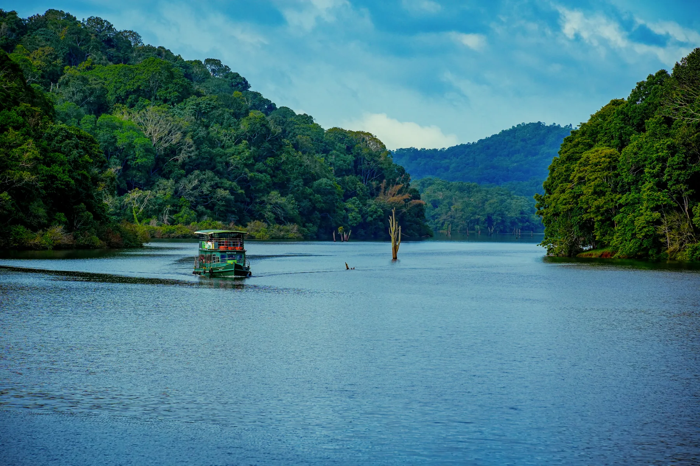
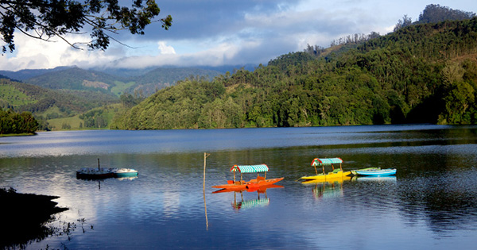
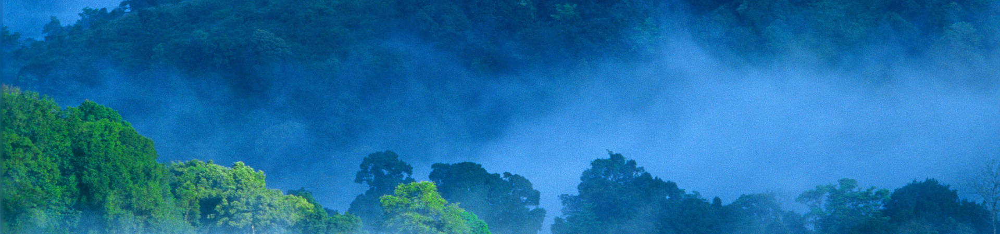

Periyar
Lake & Reserve
Explore the Periyar setting through authorised boating or nature programmes. Wildlife sightings are never guaranteed, and current access should be checked before visiting.

Forest-fringed water, spice-scented plantations, wildlife experiences and cool highland roads around Periyar and Kumily.
Thekkady is the principal visitor gateway to the Periyar landscape in Idukki district. It pairs protected forest and lake scenery with Kumily's cardamom, pepper, clove and cinnamon plantations, making it a natural bridge between Munnar and the backwaters.

Explore the Periyar setting through authorised boating or nature programmes. Wildlife sightings are never guaranteed, and current access should be checked before visiting.

Join a reputable guided plantation visit to learn how cardamom, pepper, cinnamon, cloves and other crops are grown and processed.
Choose from officially available guided walks and eco-tourism activities according to weather, forest rules, fitness and advance booking requirements.
The Periyar Valley was historically connected to the Pandya and Travancore regions. Construction of the Mullaperiyar dam in 1895 formed the lake that now defines much of the landscape, while later conservation measures developed the protected forest known today as Periyar Tiger Reserve.
Official Periyar historyThekkady fits naturally after Munnar and before Alappuzha, Kumarakom or Munroe Island. Keep the arrival evening light, then reserve the next morning for a pre-booked nature or lake experience.